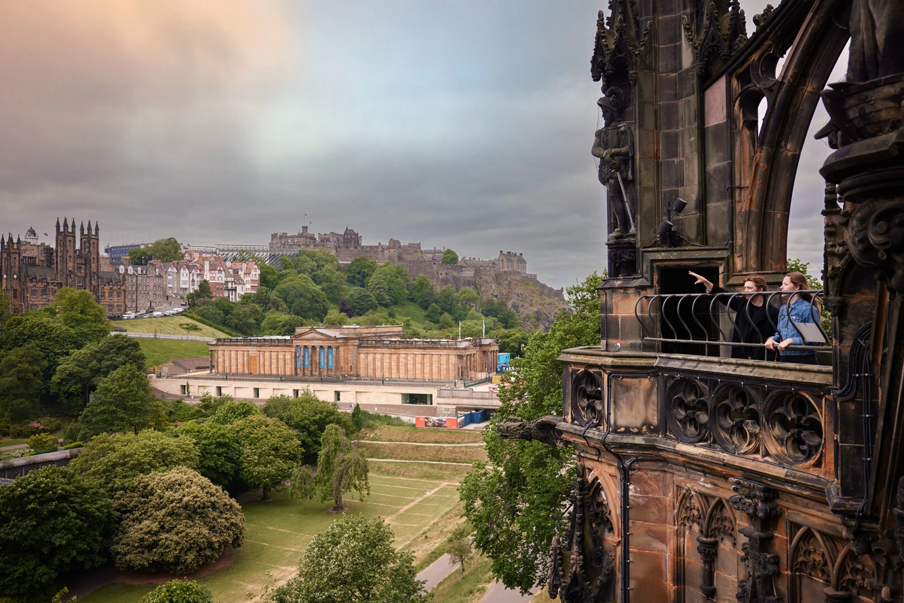
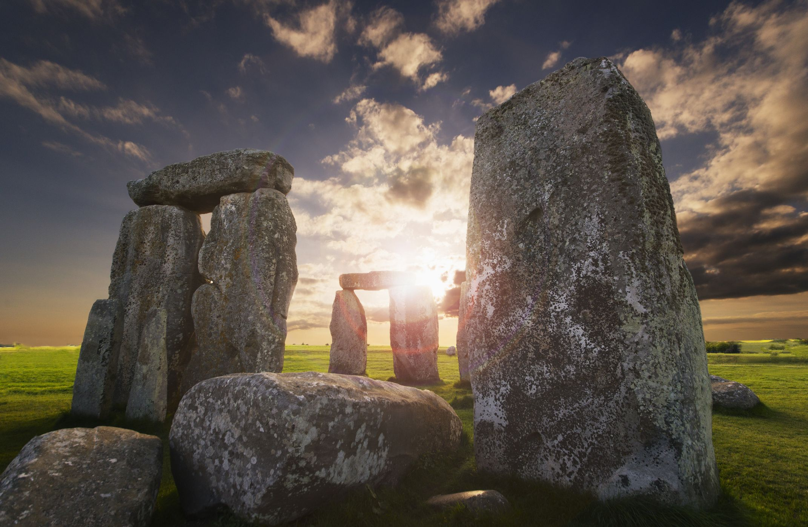
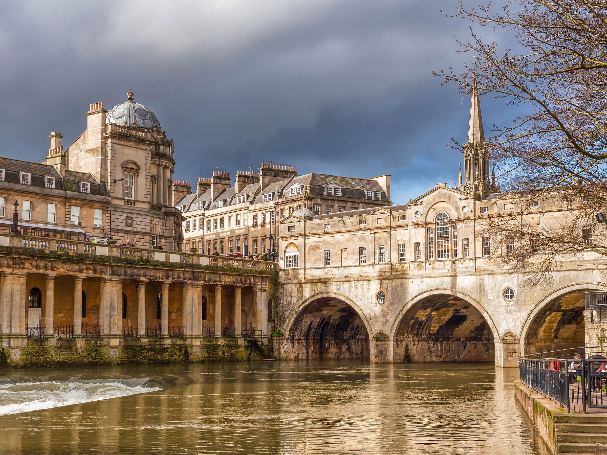
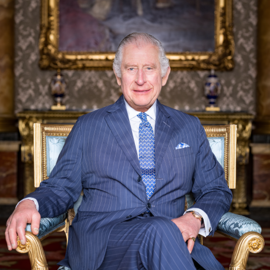

Descripcion del pais
El Reino Unido, oficialmente conocido como el Reino Unido de Gran Bretaña e Irlanda del Norte, es un país insular situado al noroeste de Europa. Compuesto por Inglaterra, Escocia, Gales e Irlanda del Norte, el Reino Unido es conocido por su historia rica y variada, su influencia cultural global y su importante papel en la política mundial. Londres, la capital, es un centro financiero y cultural de renombre mundial, famoso por monumentos como el Big Ben, el Palacio de Buckingham y la Torre de Londres. El Reino Unido tiene una economía diversificada y es miembro del G7, la OTAN y la ONU. El idioma oficial es el inglés, aunque se hablan otros idiomas regionales como el galés y el gaélico escocés. El Reino Unido también es famoso por sus universidades de prestigio, como Oxford y Cambridge, y por su contribución a la literatura, la música y las artes.
5 lugares para ir de vacaciones
1. Londres
Londres, la capital del Reino Unido, es una ciudad vibrante y cosmopolita, rica en historia y cultura. Los visitantes pueden explorar monumentos icónicos como el Big Ben, el Palacio de Buckingham y la Torre de Londres. El Museo Británico y la Galería Nacional albergan algunas de las colecciones de arte y artefactos más impresionantes del mundo. Además, el West End es famoso por sus teatros y espectáculos, y Camden Market ofrece una experiencia única de compras y gastronomía. Londres también cuenta con numerosos parques, como Hyde Park y Regent's Park, perfectos para relajarse.
2. Edimburgo
Edimburgo, la capital de Escocia, es una ciudad llena de encanto histórico y belleza natural. El Castillo de Edimburgo, situado en una colina, ofrece vistas panorámicas de la ciudad y es el hogar de las joyas de la corona escocesa. La Royal Mile, una calle llena de tiendas, pubs y restaurantes, conecta el castillo con el Palacio de Holyroodhouse. Durante el mes de agosto, la ciudad cobra vida con el Festival Internacional de Edimburgo, un evento mundialmente conocido que celebra las artes. Además, los visitantes pueden explorar Arthur's Seat, un antiguo volcán y un excelente lugar para hacer senderismo.
3. Stonehenge
Stonehenge, uno de los monumentos prehistóricos más famosos del mundo, se encuentra en Wiltshire, Inglaterra. Este círculo de piedras, cuyo propósito exacto sigue siendo un misterio, atrae a miles de visitantes cada año. Se cree que fue construido hace más de 4,000 años y está alineado con los solsticios de verano e invierno. Los visitantes pueden aprender sobre la historia y los mitos que rodean Stonehenge en el centro de visitantes cercano, que también ofrece una exhibición de artefactos encontrados en el sitio.
4. Lake Distric
El Lake District, en el noroeste de Inglaterra, es un área de impresionante belleza natural y un destino popular para los amantes del aire libre. Conocido por sus lagos, montañas y valles, el Lake District ofrece una gran variedad de actividades como senderismo, navegación y ciclismo. El parque nacional alberga el lago más grande de Inglaterra, Windermere, y la montaña más alta, Scafell Pike. La región también ha inspirado a muchos poetas y escritores, incluyendo a William Wordsworth, y cuenta con encantadores pueblos como Keswick y Ambleside.
5. Bath
Bath, una ciudad en el suroeste de Inglaterra, es famosa por sus baños romanos y su arquitectura georgiana. Los visitantes pueden explorar las antiguas termas romanas, que se construyeron alrededor de aguas termales naturales. El Royal Crescent y el Circus son ejemplos impresionantes de la arquitectura georgiana y ofrecen una visión del pasado elegante de la ciudad. Bath también es conocida por su asociación con la escritora Jane Austen, y los aficionados a la literatura pueden visitar el Jane Austen Centre para aprender más sobre su vida y obras.
Datos curiosos
1. El té

El Reino Unido es famoso por su amor por el té. Se estima que los británicos consumen alrededor de 165 millones de tazas de té al día. La tradición del té de la tarde comenzó en el siglo XIX con la duquesa de Bedford, que empezó a tomar una pequeña comida entre el almuerzo y la cena. Hoy en día, el té de la tarde es una actividad popular, especialmente en Londres, donde se puede disfrutar en numerosos hoteles y salones de té.
2. Big Ben
Big Ben, uno de los símbolos más reconocibles de Londres, en realidad no es el nombre de la torre en sí. Big Ben es el apodo de la Gran Campana dentro de la torre del reloj, que fue renombrada oficialmente como la Torre Elizabeth en 2012 en honor al Jubileo de Diamante de la Reina Isabel II. La torre, que forma parte del Palacio de Westminster, ha sido un icono de la ciudad desde su finalización en 1859.
3. Sistema Monárquico
El Reino Unido es una de las monarquías más antiguas del mundo, con una historia que se remonta a más de mil años. La monarquía británica ha tenido 61 monarcas desde el reinado de William el Conquistador en 1066. Aunque el papel de la monarquía ha cambiado a lo largo de los siglos, la reina o el rey actual sigue siendo una figura simbólica y ceremonial, con poderes limitados por una constitución parlamentaria.
Quiz
¡Prueba tus conocimientos con este Quiz!
Gracias por participar
Tu puntaje fue: